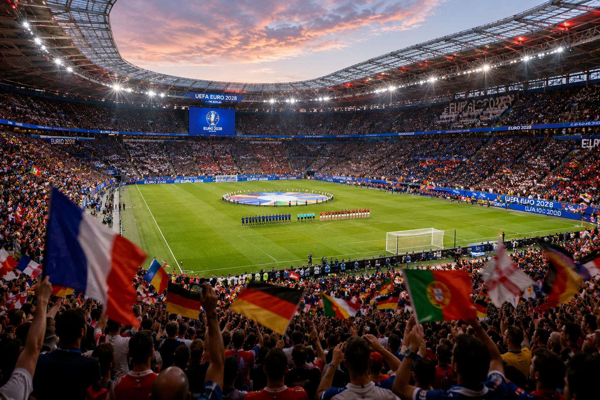
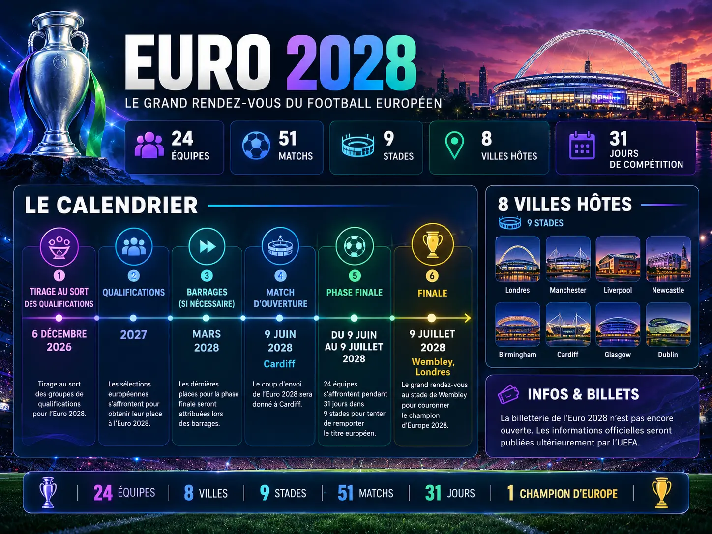
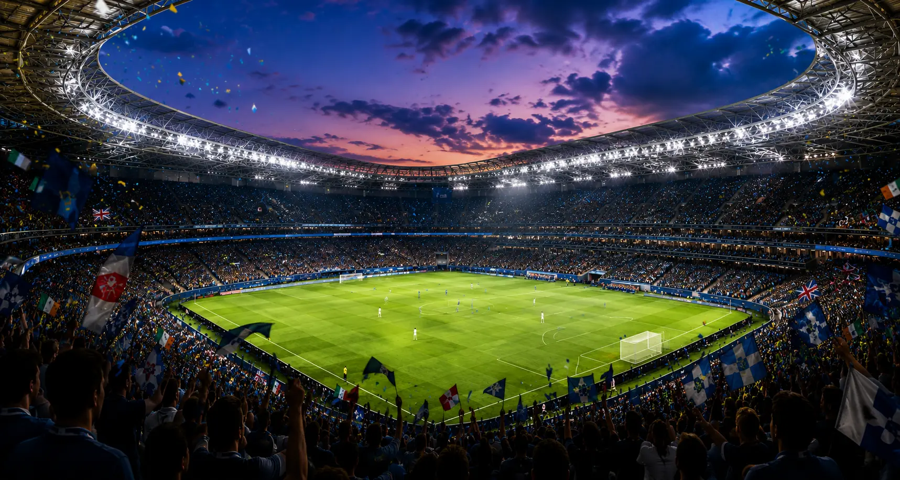

Consultez le calendrier complet des matchs, les dates, les phases et les stades.
Découvrez Londres, Dublin, Glasgow, Cardiff et les autres villes hôtes.
Retrouvez les informations officielles de l'UEFA sur la billetterie et les mises en vente.
Comparez les vols vers les villes hôtes de l'Euro 2028 au Royaume-Uni et en Irlande.
Préparez-vous à vivre l'un des plus grands événements sportifs d'Europe dans des destinations emblématiques du Royaume-Uni et de l'Irlande. L'Euro 2028 réunira football de haut niveau, stades mythiques et villes à découvrir pour une expérience unique.
L'Euro 2028 se déroulera du 9 juin au 9 juillet 2028 en Angleterre, en Écosse, au Pays de Galles et en République d'Irlande. La compétition réunira 24 équipes pour 51 matchs disputés dans 9 stades répartis dans 8 villes hôtes.
De l'énergie de Londres et Manchester à l'ambiance de Glasgow, Cardiff et Dublin, chaque ville hôte offrira une expérience différente pour vivre l'Euro 2028. Le match d'ouverture se jouera au National Stadium of Wales à Cardiff le 9 juin 2028, tandis que les demi-finales et la finale auront lieu au stade de Wembley à Londres, avec une finale programmée le 9 juillet 2028.

Le calendrier officiel des matchs de l'Euro 2028 a été annoncé. Au total, 51 matchs seront disputés du 9 juin au 9 juillet 2028 dans neuf stades répartis entre huit villes hôtes au Royaume-Uni et en Irlande.
Les équipes sont pour le moment indiquées selon leur position dans leur groupe (A1, A2, B1, B2...). Les noms des équipes ainsi que les horaires précis des rencontres seront ajoutés après le tirage au sort de la phase finale en 2027.
Retrouvez ci-dessous le calendrier complet de l'Euro 2028 avec les matchs, les dates, les différentes phases de la compétition et les stades.
| Date | Phase | Match | Stade |
|---|---|---|---|
| Phase de groupes | A1 vs A2 | Cardiff – National Stadium of Wales | |
| Phase de groupes | A3 vs A4 | Glasgow – Hampden Park | |
| Phase de groupes | B1 vs B2 | Manchester – Manchester City Stadium | |
| Phase de groupes | B3 vs B4 | Dublin – Dublin Arena | |
| Phase de groupes | C1 vs C2 | Londres – Wembley Stadium | |
| Phase de groupes | C3 vs C4 | Birmingham – Villa Park | |
| Phase de groupes | D3 vs D4 | Liverpool – Everton Stadium | |
| Phase de groupes | D1 vs D2 | Londres – Tottenham Hotspur Stadium | |
| Phase de groupes | E1 vs E2 | Dublin – Dublin Arena | |
| Phase de groupes | E3 vs E4 | Newcastle – St James' Park | |
| Phase de groupes | F1 vs F2 | Glasgow – Hampden Park | |
| Phase de groupes | F3 vs F4 | Manchester – Manchester City Stadium | |
| Phase de groupes | A1 vs A3 | Cardiff – National Stadium of Wales | |
| Phase de groupes | A2 vs A4 | Liverpool – Everton Stadium | |
| Phase de groupes | B1 vs B3 | Londres – Wembley Stadium | |
| Phase de groupes | B2 vs B4 | Birmingham – Villa Park | |
| Phase de groupes | C1 vs C3 | Londres – Tottenham Hotspur Stadium | |
| Phase de groupes | C2 vs C4 | Newcastle – St James' Park | |
| Phase de groupes | D1 vs D3 | Londres – Wembley Stadium | |
| Phase de groupes | D2 vs D4 | Manchester – Manchester City Stadium | |
| Phase de groupes | E1 vs E3 | Dublin – Dublin Arena | |
| Phase de groupes | E2 vs E4 | Liverpool – Everton Stadium | |
| Phase de groupes | F1 vs F3 | Glasgow – Hampden Park | |
| Phase de groupes | F2 vs F4 | Newcastle – St James' Park | |
| Phase de groupes | A4 vs A1 | Cardiff – National Stadium of Wales | |
| Phase de groupes | A2 vs A3 | Londres – Tottenham Hotspur Stadium | |
| Phase de groupes | B2 vs B3 | Dublin – Dublin Arena | |
| Phase de groupes | B4 vs B1 | Londres – Wembley Stadium | |
| Phase de groupes | C4 vs C1 | Manchester – Manchester City Stadium | |
| Phase de groupes | C2 vs C3 | Liverpool – Everton Stadium | |
| Phase de groupes | D4 vs D1 | Birmingham – Villa Park | |
| Phase de groupes | D2 vs D3 | Newcastle – St James' Park | |
| Phase de groupes | E4 vs E1 | Dublin – Dublin Arena | |
| Phase de groupes | E2 vs E3 | Londres – Tottenham Hotspur Stadium | |
| Phase de groupes | F4 vs F1 | Glasgow – Hampden Park | |
| Phase de groupes | F2 vs F3 | Cardiff – National Stadium of Wales | |
| Huitième de finale | 1er du groupe A vs 2e du groupe C | Cardiff – National Stadium of Wales | |
| Huitième de finale | 2e du groupe A vs 2e du groupe B | Liverpool – Everton Stadium | |
| Huitième de finale | 1er du groupe C vs 3e d'un groupe D/E/F | Manchester – Manchester City Stadium | |
| Huitième de finale | 1er du groupe B vs 3e d'un groupe A/D/E/F | Newcastle – St James' Park | |
| Huitième de finale | 1er du groupe F vs 3e d'un groupe A/B/C | Glasgow – Hampden Park | |
| Huitième de finale | 2e du groupe D vs 2e du groupe E | Londres – Tottenham Hotspur Stadium | |
| Huitième de finale | 1er du groupe D vs 2e du groupe F | Birmingham – Villa Park | |
| Huitième de finale | 1er du groupe E vs 3e d'un groupe A/B/C/D | Dublin – Dublin Arena | |
| Quart de finale | Vainqueur du 8e à Glasgow vs vainqueur du 8e à Tottenham | Dublin – Dublin Arena | |
| Quart de finale | Vainqueur du 8e à Newcastle vs vainqueur du 8e à Cardiff | Londres – Wembley Stadium | |
| Quart de finale | Vainqueur du 8e à Manchester vs vainqueur du 8e à Liverpool | Cardiff – National Stadium of Wales | |
| Quart de finale | Vainqueur du 8e à Dublin vs vainqueur du 8e à Birmingham | Glasgow – Hampden Park | |
| Demi-finale | Vainqueur du quart de finale 1 vs vainqueur du quart de finale 2 | Londres – Wembley Stadium | |
| Demi-finale | Vainqueur du quart de finale 3 vs vainqueur du quart de finale 4 | Londres – Wembley Stadium | |
| Finale | Finale de l'Euro 2028 - Wembley Stadium | Londres – Wembley Stadium |
Trois créneaux horaires ont été annoncés pour les matchs de l'Euro 2028 : 15h00, 18h00 et 21h00 (CEST). L'horaire précis de chaque rencontre sera confirmé après le tirage au sort de la phase finale en 2027.
La finale de l'Euro 2028, disputée à Wembley Stadium le 9 juillet 2028, débutera à 18h00 CEST (17h00 heure locale).
La vente générale des billets pour l'Euro 2028 n'a pas encore commencé. L'UEFA a annoncé que les billets seront mis en vente après le tirage au sort de la phase finale en décembre 2027, lorsque les supporters connaîtront les équipes qui s'affronteront lors de chaque match de la phase de groupes.
🎟️ Informations officielles de l'UEFA sur la billetterie →Le tirage au sort des qualifications pour l'Euro 2028 aura lieu à Belfast le 6 décembre 2026. Il déterminera la composition des 12 groupes de qualification.
La phase de groupes des qualifications se déroulera de mars à novembre 2027. Les sélections nationales européennes tenteront d'obtenir leur place pour la phase finale de la compétition.
L'Euro 2028 se déroulera du 9 juin au 9 juillet 2028, avec 24 équipes en compétition dans huit villes hôtes et neuf stades.
Le match d'ouverture se disputera à Cardiff le 9 juin 2028. Les quarts de finale auront lieu à Dublin, Londres, Cardiff et Glasgow, tandis que les deux demi-finales et la finale de l'Euro 2028 se joueront à Wembley Stadium, à Londres.
Retrouvez ici les matchs de l'équipe de France, les villes dans lesquelles joueront les Bleus ainsi que les informations sur la billetterie, dès que leur qualification et le calendrier de la compétition permettront de connaître leur parcours.
🇫🇷 Calendrier et billets à venirWembley accueillera les deux demi-finales ainsi que la finale de l'Euro 2028.
Visiter Londres pendant l'Euro 2028 → Explorer la carte de Londres →Une ville profondément liée à l'histoire et à la culture du football anglais.
Football, musique et ambiance animée sur les rives de la Mersey.
Une ville passionnée de football qui accueillera des matchs à St James' Park.
La deuxième plus grande ville d'Angleterre accueillera des matchs à Villa Park.
La capitale galloise accueillera le match d'ouverture de l'Euro 2028.
La plus grande ville d'Écosse accueillera des matchs de l'Euro 2028 dans l'emblématique Hampden Park.
La capitale irlandaise mêlera football, pubs et ambiance festive tout au long de la compétition.
Vous préparez votre voyage pour l'Euro 2028 ? Comparez les vols pour rejoindre les villes hôtes de la compétition, notamment Londres, Cardiff, Glasgow, Manchester, Dublin et les autres destinations du Royaume-Uni et d'Irlande.
Londres — accueillera les deux demi-finales ainsi que la finale de l'Euro 2028.
Londres — l'un des stades les plus modernes d'Europe.
Manchester — l'un des principaux stades anglais de la compétition.
Liverpool — le nouveau stade situé à Bramley-Moore Dock.
Newcastle — un stade emblématique situé au cœur de la ville.
Birmingham — l'un des stades historiques du football anglais.
Cardiff — accueillera le match d'ouverture de l'Euro 2028.
Glasgow — le stade historique de l'équipe nationale d'Écosse.
Dublin — le principal stade irlandais utilisé pour la compétition.
Pour profiter pleinement de l'Euro 2028, pensez à réserver votre hébergement suffisamment tôt, idéalement à proximité des stades, des transports en commun ou des centres-villes.
Londres, Manchester, Liverpool, Newcastle, Birmingham, Cardiff, Glasgow et Dublin accueilleront des supporters venus de toute l'Europe pendant le mois de compétition.
🏨 Trouver un hébergement à Londres →L'Euro 2028 se déroulera en Angleterre, en Écosse, au Pays de Galles et en République d'Irlande. Les matchs seront disputés dans 9 stades répartis entre 8 villes hôtes.
L'Euro 2028 se déroulera du 9 juin au 9 juillet 2028. Le match d'ouverture aura lieu à Cardiff, tandis que la finale se jouera à Wembley Stadium, à Londres.
Le calendrier de l'Euro 2028 a déjà été annoncé, avec les dates, les villes hôtes et les stades de chaque rencontre. Les équipes et les derniers détails des matchs seront ajoutés après le tirage au sort de la phase finale en 2027.
L'horaire précis de chaque match de l'Euro 2028 sera confirmé après le tirage au sort de la phase finale en 2027. L'UEFA a annoncé trois créneaux possibles : 15h00, 18h00 et 21h00 CEST.
Les 8 villes hôtes sont Londres, Manchester, Liverpool, Newcastle, Birmingham, Cardiff, Glasgow et Dublin. Londres accueillera des matchs dans deux stades : Wembley Stadium et Tottenham Hotspur Stadium.
La finale de l'Euro 2028 aura lieu à Wembley Stadium, à Londres, le 9 juillet 2028. Wembley accueillera également les deux demi-finales.
24 équipes nationales participeront à la phase finale, pour un total de 51 matchs.
Consultez le site officiel de la billetterie UEFA pour connaître les dates de mise en vente, les tarifs et les modalités d'achat des billets.

Préparez votre voyage, découvrez les villes hôtes et vivez l'ambiance unique de l'Euro 2028 au Royaume-Uni et en Irlande.